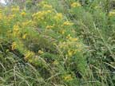
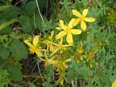
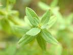
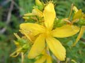
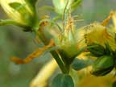
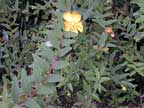

St. John's wort
Hypericum perforatum
Other names
common St. John’s wort, perforate St. John’s wort, Klamath weed
Description
A perennial herb with a two edged erect stem, grows up to 1 m tall. Leaves are oblong to ovate oblong up to 3 cm long with glandular dots. Yellow flowers with five petals. All parts of the plant with black dots (including petals) are poisonous.
Similar plants
Tutsan, rose of Sharon, swamp hypericum and several others. Not all are toxic. H. perforatum is the only one likely to be growning in sufficient quantity to cause problems.
Distribution
Scattered locations on both islands but more frequent in eastern parts of the South Island, particularly found in waste lands, pastures and roadsides. Locally common in Hawke's Bay.
Toxin
Hypericin is a photosensitising toxin. (Type I or primary photosensitisation). Hypericin is stable when dried and is heat resistant. Hay containing dried St John’s wort is toxic, although some of the hypericin is lost on drying. 100g of plant / day is enough to cause problems in sheep.
Species affected
Sheep, goats, cattle, white pigs and horses have been affected. People can be poisoned by the herbal medicine (taken as an antidepressant). Horses are more sensitive to toxicity, followed by pigs, cattle, sheep and goats. Younger animals are more susceptible than adults.
Clinical signs acute
Clinical signs chronic
Inappetance, diarrhoea, resltessness and pawing the ground. Pruritis, depression, hindlimb weakness, recumbency, tachycardia, polypnoea, dyspnoeas, hyperthermia, salivation and scab formation around the face, eyes and ears due to constant rubbing. Photosensitivity appears from 2 days to 3 weeks after ingestion. Severe erythema of non pigmented skin, followed by swelling and exudation is associated with intense pruritis. Pigmented areas are not likely to be affected. In sheep an extreme hyperaesthesia to touch or contact with cold water has been reported. Blindness and convulsions have been reported prior to death.
Post mortem signs
The carcass is usually of poor quality with skin lesions on non pigmented areas and conjunctivitis. Skin lesions may be mild to severe (reddening to oedema to necrosis and sloughing). Death may result from secondary infection and gangrene. Histology of the skin lesions include hyperaemia, oedema to necrosis. Rabbits fed St John’s wort had enlargement and cirrhosis of the liver, inflammation and necrosis of the kidneys.
Diagnosis
Based on clinical signs and evidence of plant ingestion. Serum liver enzymes are often normal.
Differential diagnosis
Other causes of photosensitivity, eg, facial eczema, ngaio.
Treatment
Animals need to be protected from sunlight, provide good shade or put the animals indoors. Anti inflammatory drugs, antibiotics as needed and symptomatic care.
Prognosis
Depends on the severity of the poisoning, animals that survive the acute phase may have decreased production potential.
Prevention
Avoid feed shortages that will force stock to eat the plant.
References
Bourke, C.A. Effects of Hypericum perforatum on animal health and production. Plant Protection quarterly, 1997 12:2:91 92.
Bourke CA. Sunlight associated hyperthermia as a consistent and rapidly developing clinical sign in sheep intoxicated by St John’s Wort (Hypericum perforatum ) Australian Veterinary Journal. 2000. 78:483 488.
Conner H.E. The Poisonous Plants In New Zealand. 1992. GP Publications Ltd, Wellington
Cooper M R, Johnson A W. Poisonous Plants and Fungi in Britan: Animals and Human Poisoning. Her Majesty’s Stationary Office. London. 1998
Parton K, Bruere A.N. and Chambers J.P. Veterinary Clinical Toxicology, 2nd ed. 2001. Veterinary Continuing Education Publication No. 208
|  plant |
 |
|
|
 |
 |
|
|
 |
 "perforations" |
|
|
 |
|
|